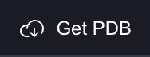
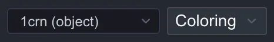

クイックツアー¶
CueMol3 を起動してから、構造を読み込み、表示を整えて画像として書き出し、シーンを保存するまでの 最短の流れを追います。個々の画面の詳細は 画面構成、 メニュー項目の詳細は メニューリファレンス を参照してください。
1. 起動する¶
CueMol3 を起動すると単一のウィンドウが開きます。 シーンはウィンドウ上部のタブとして並びます。
{kind=link}
2. 構造を読み込む¶
ここでは例として、小さなタンパク質クランビン (PDB ID: 1CRN) を読み込みます。 PDB ID がわかっている構造は、File > Get PDB... で取得するのが最も手軽です。
-
File > Get PDB... を選びます (ツールバーの
Get PDBボタンでも同じ)
-
PDB Accession Code に
1CRNと入力し、Download を押します -
読み込みのオプション画面が出るので、Renderer type から simple を選んで Open を押します
{kind=link}
{kind=link}
分子全体が細い線画で表示されます。simple は結合を線で描くだけの最も軽い 表示方法で、まず全体を眺めるのに向いています。
{kind=link}
座標に加えて、電子密度マップ (RCSB の cif.gz、EBI の MTZ) も取得できます。 ダウンロードは進捗ダイアログの Cancel で中断できます。手元のファイルを開く場合は File > Open File... を使います (同じオプション画面が出ます)。
3. 表示を整える¶
読み込んだ構造は、Renderer (表示方法) を通じて分子ビュー (中央の 3D 表示領域) に 描かれます。1 つの Object には複数の Renderer を重ねられます。
Renderer を追加する¶
二次構造がわかるように、ribbon を追加してみます。
-
左サイドパネルの Explorer > Scene ツリー (シーンツリー) で Object (
1crn) を 右クリックし、New Renderer を選びます -
Renderer type から ribbon を選び、Create を押します
{kind=link}
{kind=link}
線画に重なって、ヘリックスとシートは板状のリボン、それ以外は細いチューブで 描かれます。
次に、ジスルフィド結合を作っている Cys 残基だけを ballstick (原子を球、結合を 円柱で描くモデル) で表示してみます。Renderer は選択式で対象の原子を絞り込めます (→ 選択式の文法)。ここでは式を手で書くかわりに、 選択ビルダーで組み立てます。
- 同じ手順で Object (
1crn) を右クリックし、New Renderer を選びます - Renderer type から ballstick を選びます
- Selection にチェックを入れます
- 選択式の欄の右端の ▼ を押して、選択ビルダーを開きます
- Term タブに切り替え、キーワードから resn (残基名) を選びます
- 値の欄の ▼ から候補を開き、CYS を選びます
-
Set を押します。選択式の欄に
resn CYSと入力されます -
Create を押します
{kind=link}
{kind=link}
リボンに重なって、6 個の Cys 残基だけが球と円柱で描かれます。クランビンでは これらが 3 対のジスルフィド結合を作っています。
最初の線画はもう不要なので、シーンツリーの simple1 の行の目のアイコンを
クリックして非表示にします。目のアイコンでは Renderer ごとの表示・非表示を
いつでも切り替えられます。
{kind=link}
- Renderer は種類を選ぶとすぐに既定値で作成され、細かい設定は後から インスペクタで調整します (この方針は 操作パラダイムの変更 を参照)
- 定義済みの組み合わせ (プリセット) を選ぶと、複数の Renderer をまとめたグループが一度に作られます
見た目を調整する¶
シーンツリーで ballstick1 をダブルクリックすると、右側のプロパティインスペクタに
その設定が表示されます。Ball and stick セクションを開き、Atom radius
(原子の球の半径、Å 単位) を既定の 0.3 から 0.5 に上げてみてください。
球が大きくなり、原子を強調した表示に変わります。値の変更は分子ビューに
即座に反映され、取り消したいときは Cmd+Z / Ctrl+Z で戻せます。
{kind=link}
色を塗り替える¶
色は左サイドパネルの Explorer > Color パネルで設定します。Coloring は
Renderer ごとにも、分子 Object 側にも設定できます。Renderer の既定の色は
Object の色 ($molcol) を参照するため、Object 側を塗り替えると、それを参照して
いるすべての Renderer に反映されます。ここでは Object 側を塗り替えます。
-
上部で
1crn (object)を選びます
-
隣の Coloring ボタンを押し、Rainbow coloring を選びます
{kind=link}
リボンが N 末端から C 末端へ虹色に塗り替わり、ballstick の炭素原子の色も 追従します。Coloring には Paint / CPK / B-factor / 静電ポテンシャルなどの 種類があります (→ Coloring)。
{kind=link}
視点を動かす¶
分子ビュー上でのマウス操作は次のとおりです (既定値)。
| 操作 | 動作 |
|---|---|
| 左ドラッグ | 回転 |
| ホイール | ズーム |
| トラックパッドの 2 本指スクロール | 平行移動 (ポインティングデバイス設定が Mac trackpad / Auto-detect のとき) |
詳細と設定変更は マウス・トラックパッド操作 を参照してください。
4. 画像を書き出す¶
用途に応じて 2 通りあります。
手軽に画面のまま出す¶
Rendering > Export scene > PNG image... を選ぶと、保存先とサイズ・DPI・背景の透過を指定して PNG を書き出せます。
{kind=link}
高品位なレイトレース画像を出す¶
Rendering > Image rendering... を選ぶと、独立したレンダリングウィンドウが開き、 静止画 (Still) モードになります。
{kind=link}
-
対象のビュー (Target) を選ぶ。バックエンドは既定の Umbreon のままで構いません
-
画質・サイズを設定する
-
Start Render を押すと、進捗が表示され、完了すると結果画像が同じウィンドウに表示されます
{kind=link}
{kind=link}
{kind=link}
動画を作る場合は Rendering > Movie rendering... で同じウィンドウの Movie モードを使います (→ レンダリングウィンドウ)。
5. シーンを保存する¶
File > Save Scene (Cmd+S / Ctrl+S) でシーンを .qsc ファイルに保存します。
初めての保存では Save Scene As... と同じく保存先とオプション (埋め込み / 互換性 / 圧縮 / エンコーディング) を
指定する画面が出ます。
{kind=link}
.qsc は CueMol2 と互換のため、CueMol2 で作成したシーンを CueMol3 で開くこともできます。
次のステップ¶
- チュートリアル — 目的別の作図手順をひととおり
- 画面構成 — 各パネルの役割を詳しく
- メニューリファレンス — 全メニュー項目の一覧
- CueMol2 からの変更点 — CueMol2 経験者向け
確認対象: CueMol3 2.3.8.495